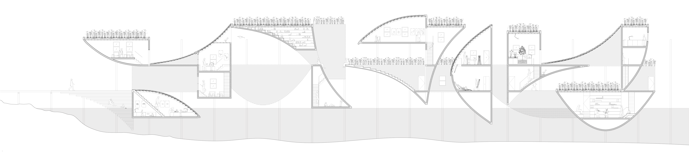

See/Sea Changes
Core I Studio, Critic: Nikole Bouchard
Fall 2019
See/Sea Changes envisions a building that decays. Sited in the shallow coastal water of the Long Island Sound, the project posits a productive decomposition over the next 100 years of sea level rise. A series of tumbling volumes, supported by an exterior frame, are composed of specific materials that contribute to the salt marsh ecosystem in both life and death. As the boundary between inside and outside, skin and structure, and material and form vacillates, spaces transition from occupancy by humans to inhabitation by non-humans.
The unfolding section drawing invites interaction and play. Different ways of folding the drawing reveal alternatives for the project's construction/deconstruction. The project is ultimately a proposal for an architecture that amplifies its surrounding ecosystem, reclaiming unpredictability, decay, and change as productive values.


